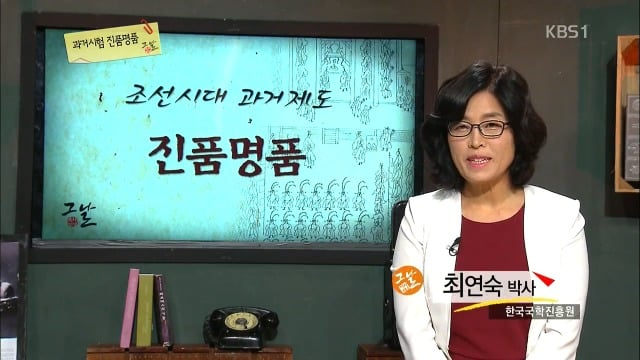
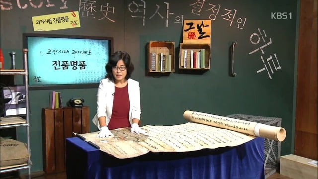
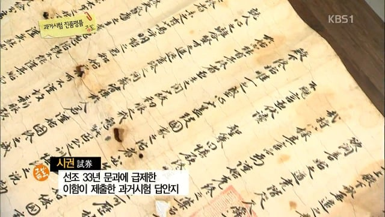
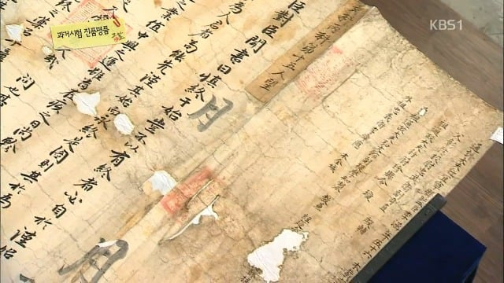
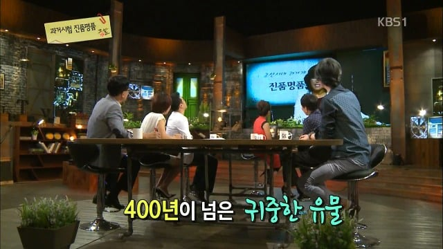
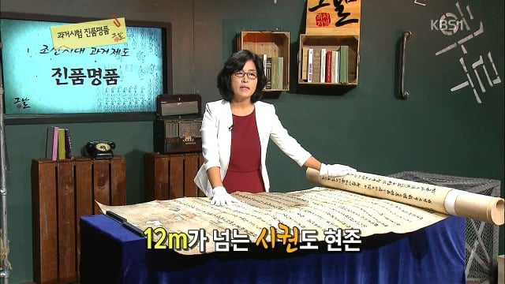
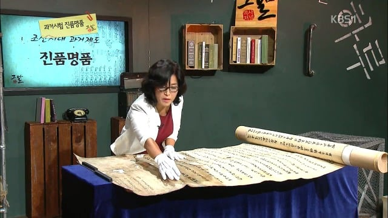
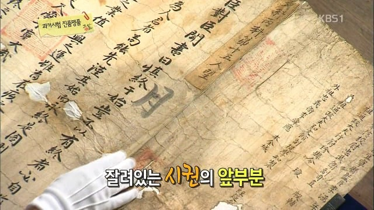
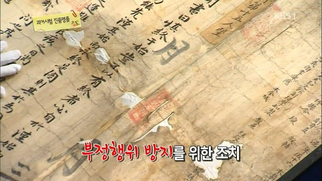
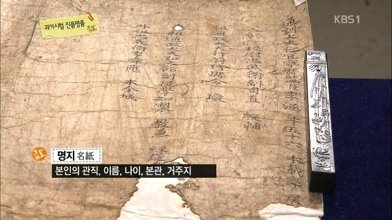
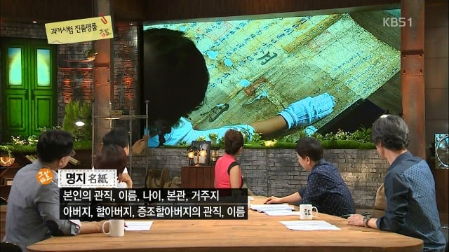
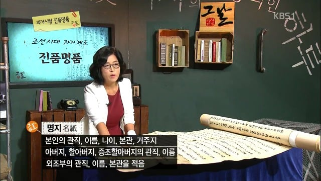
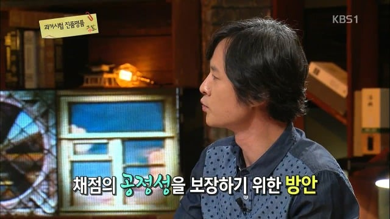
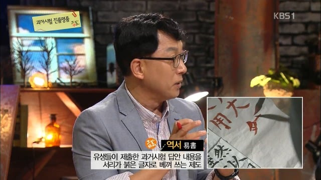
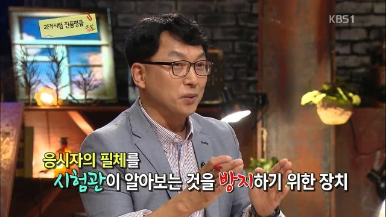
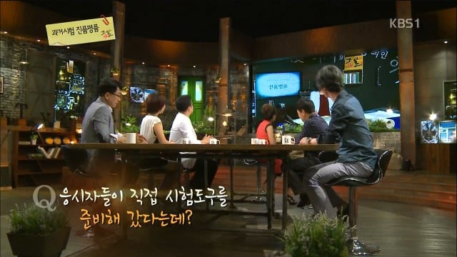
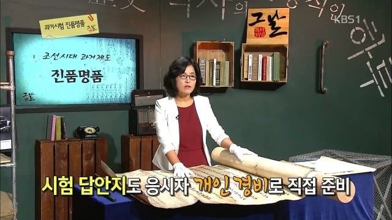
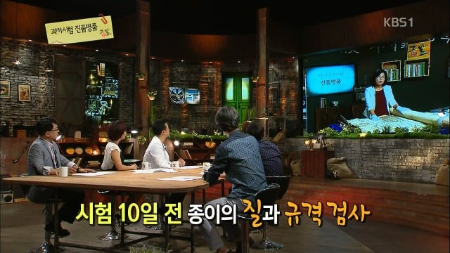
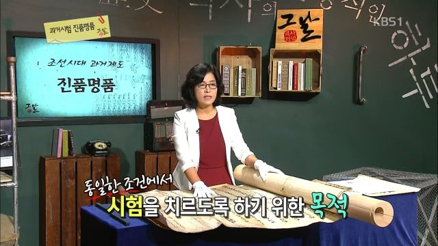
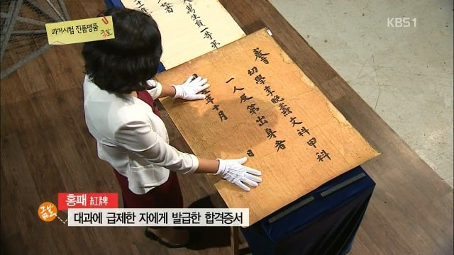
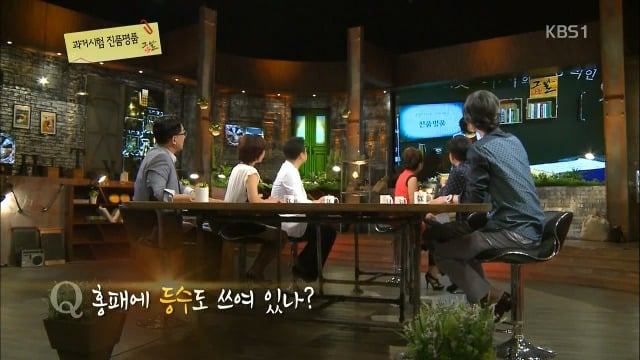
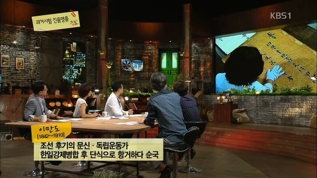
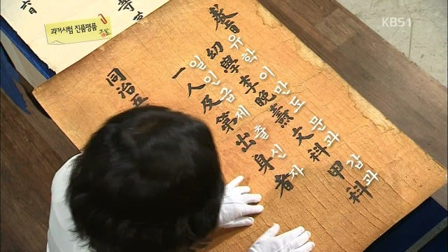
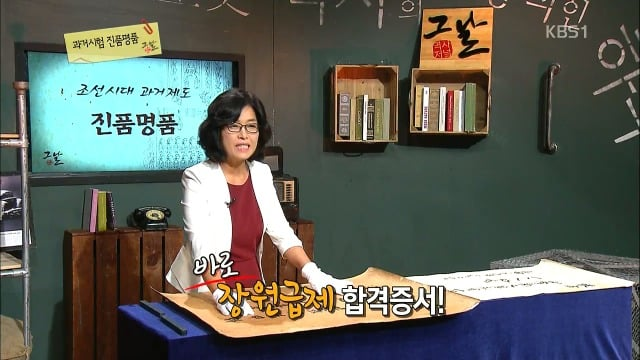
댓글
수집 당시 댓글 65개
ㅇㅇ · 11.23 08:25:38
ㅇㅇ · 11.23 08:26:06
ㅇㅇ · 11.23 08:26:53
· ㅇㅇ · 11.23 08:29:08
· ㅇㅇ · 11.23 08:32:42
· ㅇㅇ · 11.23 08:33:33
· ㅇㅇ · 11.23 08:41:09
· ㅇㅇ · 11.23 08:46:55
· ㅇㅇ · 11.23 12:41:38
ㅇㅇ · 11.23 08:27:07
ㅇㅇ · 11.23 08:29:11
· ㅇㅇ · 11.23 16:17:45
ㅇㅇ · 11.23 08:29:31
ㅇㅇ · 11.23 08:30:13
· ㅇㅇ · 11.23 08:30:33
부정행위해도 점수낮은 견찰냥이들합격
· ㅇㅇ · 11.23 08:36:02
견찰냥이들이 국민협박하는 헬조선
ㅇㅇ · 11.23 08:31:24
ㅇㅇ · 11.23 08:32:32
· ㅇㅇ · 11.23 08:48:53
· ㅇㅇ · 11.23 09:01:34
· ㅇㅇ · 11.23 09:35:53
· ㅇㅇ · 11.23 09:36:37
ㅇㅇ · 11.23 08:35:06
Wasd · 11.23 08:36:03
ㅇㅇ · 11.23 08:37:02
ㅇㅇ · 11.23 08:40:41
· ㅇㅇ · 11.23 08:45:15
ㅇㅇ · 11.23 08:43:33
· 0000 · 11.23 08:47:02
· ㅇㅇ · 11.23 08:50:16
· ㅇㅇ · 11.23 09:26:13
· ㅇㅇ · 11.23 10:39:21
· ㅇㅇ · 11.23 12:30:23
히이잉 · 11.23 08:47:10
ㅇㅇ · 11.23 08:47:45
ㅇㅇ · 11.23 08:49:42
ㅇㅇ · 11.23 08:59:44
ㅇㅇ · 11.23 09:04:21
ㅇㅇ · 11.23 09:08:13
ㅇㅇ · 11.23 09:09:19
ㅇㅇ · 11.23 09:13:57
· ㅇㅇ · 11.23 09:34:24
dd · 11.23 09:19:12
· ㅇㅇ · 11.23 09:24:32
ㅇㅇ · 11.23 09:37:11
ㅇㅇ · 11.23 09:37:51
히이잉 · 11.23 09:43:10
ㅇㅇ · 11.23 10:02:14
· ㅇㅇ · 11.23 10:02:48
ㅇㅇ · 11.23 10:07:34
ㅇㅇ · 11.23 10:13:22
· ㅇㅇ · 11.23 11:54:24
ㅇㅇ · 11.23 10:21:57
ㅇㅇ · 11.23 10:46:50
히이잉 · 11.23 11:12:03
ㅇㅇ · 11.23 11:37:37
piyo · 11.23 13:18:21
ㅇㅇ · 11.23 13:37:46
ㅇㅇ · 11.23 14:16:30
ㅇㅇ · 11.23 14:23:54
ㅇㅇ · 11.23 14:41:22
ㅇㅇ · 11.23 14:53:34
ㅇㅇ · 11.23 14:53:46
ㅇㅇ · 11.23 15:26:51
ㅇㅇ · 11.23 20:45:47